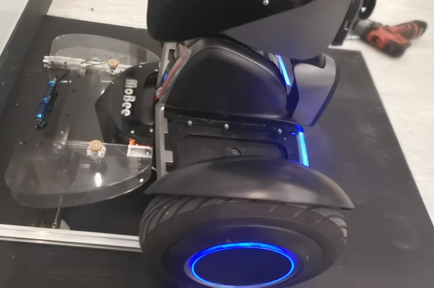
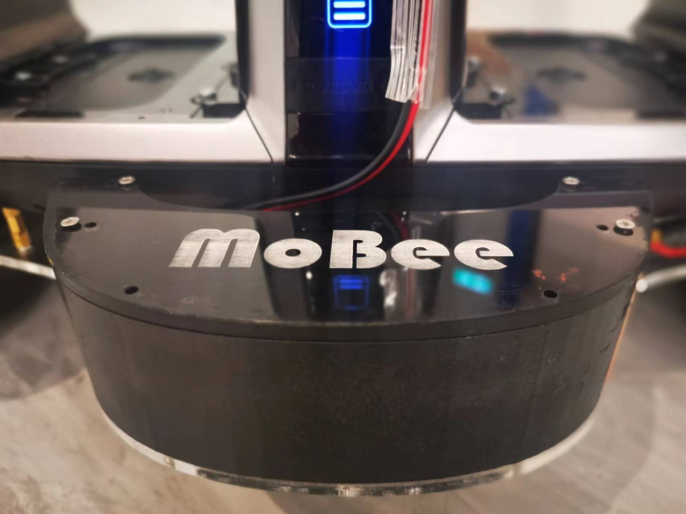
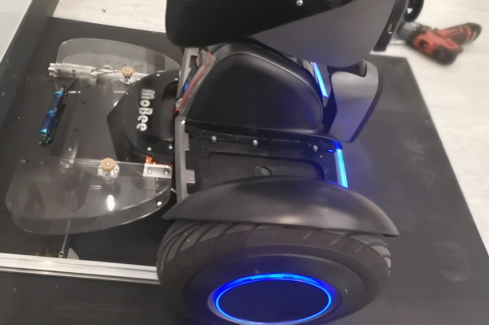
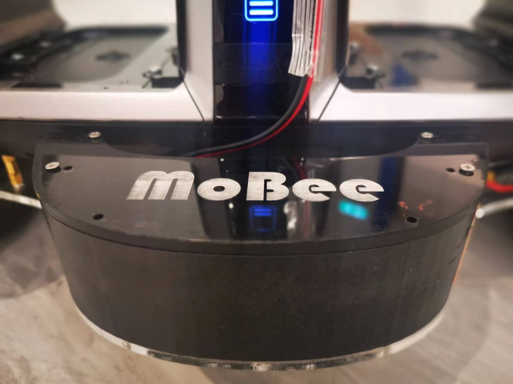
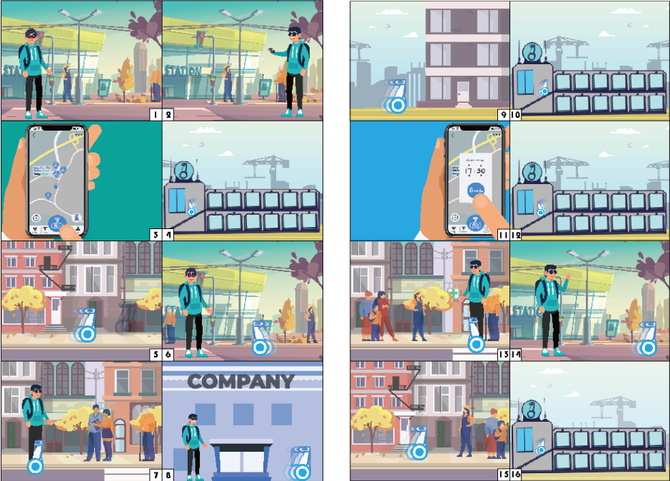

This is the 2020-2021 Year 3 first semester project of ISD. This project has no industrial partner due to the pandemic. The topic is scoped by the professor which is Personal Mobility. After some interviews and observation of current sharing transportation, the team thinks that the biggest problem of the current system is deployment. Sharing devices is hard to deploy. Therefore a self-driving sharing personal mobility system is proposed.
 



Empathize
The three team members of this project went through different problem formulation processes. The interview related to PMD is done separately. During our interview, Abstract Ladder is used to drive us to ask deeper to find the real need of the interviewers. By keep asking why to the user, we can deep down mean while we can generate the HMW problems taking reference of interviewees answer. Below is some of the Abstract Ladder we did during the process.
Problem Statement
How Might we enable people to spend their last mile's journey more conveniently
How might we help user to store their personal mobility device?
Solution
The storyboard tells a story of a boy named Jack getting out of a subway station where he cannot find any sharing bike. So, he takes out his phone and calls for our product. The PMD gets out of a charging station and moves to Jack’s position automatically. After it gets to Jack, Jack hopes up and goes. After arriving at his destination, Jack went into the building directly and the PMD Leave for the nearest station by itself. It went at the nearest station, went in and charged itself waiting for the next service. When Jack is about to leave the building, he appoints the PMD to come and wait for him downstairs. When Jack gets down the building he just gets on the PMD and heads to the station. Upon arrival, Jack gets into the station directly while PMD leaves for the nearest station to charge itself.
To implement our idea, we make use of Segway Loomo: an open platform for engineers and designers to create personal robot by building robot applications and accessories. We add a miniPC running ros on it, we add a better camera (Realsense D450) for it. And we add our own auto charging mechanism on it. Apart from Loomo itself, we built a charging station for it.
My responsibility
- Mechanical design and manufacture
- Electronics
Using SolidWorks and available materials in the market. MiniPC installation, Auto charging mechanism, and charging station.
Simple electronics and robot detection for the charging station.